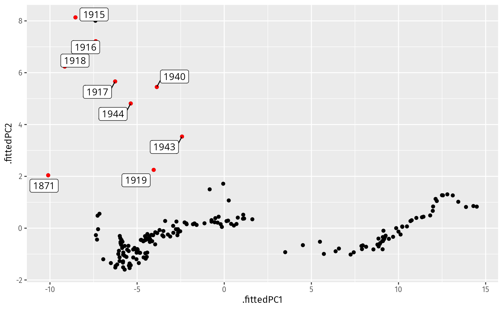

Functional data occur when the natural observational representation is a function. The most commonly occurring examples are where observations are taken of functions over one or two dimensions. For example, mortality rates are naturally represented as 1-dimensional functions of age, and surface temperatures are naturally represented as functions over the 2-dimensional plane of latitude and longitude.
Figure 10.1 shows French male mortality rates between 1816 and 1999. Each line denotes the mortality rates as a function of age for one year, with the colors in rainbow order corresponding to the years of observation. Overall, we see a large decrease in mortality rates during early childhood years, then an increase during teenage years. After about age 30, the rates increase almost linearly on a log scale. Comparing the curves over time, we see that the rates have steadily fallen for all ages, with nearly a 100-fold reduction in mortality rates at around age 10. The noticeable gap between the curves occurred after World War II due to the effective use of antibiotics, and widespread vaccinations for polio, diptheria, tetanus, whooping cough, measles, mumps and rubella.
Figure 10.1: French male mortality rates between 1816 and 1999.
As we are interested in anomalies, we will mostly focus on the unusual curves. There are about 10–15 years where the mortality rate for 20–40 year olds is much higher than in other years. These are the war years. Any anomaly detection method for functional data should identify these years as unusual.
We will denote the functional data as y_i(x). Here, i is a discrete index over all observations, and x is the continuous variable over which each function is defined. For the mortality data, y_{i}(x) represent the mortality rate for age x in year i.
It is possible to have multiple indexes (e.g., mortality rates for males and females, or for different countries, or both), and the function may be defined over more than one variable (e.g., mortality rates over age and BMI). It is also possible to have multivariate observations (e.g., mortality and fertility rates).
10.1 Interpolation and smoothing
The distinguishing feature of functional data is that we think of the data as smooth and continuous functions. In practice, our observations are usually at discrete values, even though the underlying functions are continuous. In Figure 10.1, for example, we observe the mortality rate for discrete ages 0, 1, 2, , while we think of the rate as defined for any age x \in [0,\infty).
It is common to form continuous functions using some kind of interpolation or smoothing of the raw data. Smoothing is used if the underlying curve has been observed with measurement error.
The data shown in Figure 10.1 are observed with error, as the “wiggliness” of the curves shows. The mortality rate (or central death rate) at age x and year t is defined as the number of people who died at age x in year t divided by the number of people who were aged x in the middle of year t. We can smooth the data to obtain the mortality rates at non-integer values of x.
In the following code, we use a smoothing method proposed by Hyndman and Ullah (2007), that takes account of the characteristics of mortality rates.
Figure 10.3: Smoothed French male mortality rates for all years.
10.2 Dimension reduction using basis functions
We can approximate functional data using a linear combination of basis functions:
\hat{y}_i(x) = b_0(x) + \sum_{j=1}^J \beta_{ij} b_j(x),
where b_0(x) is a constant function, \{b_1(x),\dots,b_J(x)\} are a set of basis functions, and \beta_{ij} are the coefficients. The basis functions span the space of all functions. For example, the Fourier basis functions are a set of sine and cosine functions that can be used to represent any periodic function. The B-spline basis functions are a set of piecewise polynomial functions that can be used to represent any smooth function. The choice of basis functions depends on the characteristics of the data.
The number of basis functions J is usually much smaller than the number of observations, with larger J corresponding to a more flexible approximation.
Given a set of basis functions, we can estimate the coefficients \beta_{ij} by minimizing the sum of squared errors between the observed data y_i(x) and the approximated data \hat{y}_i(x).
Alternatively, we can use functional principal component analysis to find the empirical basis functions that explain the most variance in the data. Then b_0(x) is set to be the mean function, b_0(x) = \frac{1}{n} \sum_{i=1}^n y_i(x), and the first principal component, b_1(x), is the function that minimizes \big[y_i(x) - b_0(x) - \beta_{i1}b_1(x)\big]^2 subject to the constraint that \int b_1^2(x)dx = 1. The second principal component, b_2(x), is the function that minimizes \big[y_i(x) - b_0(x) - \beta_{i1}b_1(x) - \beta_{i2}b_2(x)\big]^2 subject to the constraints that \int b_2^2(x)dx = 1 and \int b_1(x)b_2(x)dx = 0. And so on.
If the functions are discretized on a fine grid over x, we can use regular principal component decomposition to get approximately the same results as functional principal components.
In the following example, we find the first few principal components (empirical basis functions) using the French male mortality data.
# Wide version of log Mortality with ages on columnsfrmort_wide <- fr_mortality |>filter(Sex =="Male") |>mutate(logmx =log(Mortality)) |>select(-Mortality, -Sex) |> tidyr::pivot_wider(names_from = Age, values_from = logmx, names_prefix ="Age")# Compute first two principal componentspca <- frmort_wide |>select(-Year) |>prcomp(center =TRUE, scale =FALSE, rank =2)pca_bases <- broom::tidy(pca, "loadings") |>mutate(Age = readr::parse_number(column),PC =as.factor(PC) )pca_bases |>ggplot() +aes(x = Age, y = value, group = PC, color = PC) +geom_line()
Figure 10.4: First two principal components (empirical basis functions) for the French male mortality data.
# Compute principal component scorespca_scores <- broom::augment(pca, frmort_wide[, "Year"]) |>select(-.rownames)# Time series plot of scorespca_scores |> tidyr::pivot_longer(-Year,names_to ="PC", values_to ="value", names_prefix =".fittedPC" ) |>ggplot(aes(x = Year, y = value)) +geom_line(aes(colour = PC))
Figure 10.5: First two principal component scores for the French male mortality data.
pca_scores |>ggplot(aes(x = .fittedPC1, y = .fittedPC2)) +geom_point()
Figure 10.6: Scatterplot of first two principal component scores for the French male mortality data.
10.3 Anomalies in the principal component space
Code
# Find outliers in the PCspca_no_year <- pca_scores |>select(-Year)pca_scores <- pca_scores |>mutate(prob =surprisals(pca_no_year))outliers <- pca_scores |>filter(prob <0.05)pca_scores |>ggplot(aes(x = .fittedPC1, y = .fittedPC2)) +geom_point() +geom_point(data = outliers, color ="red") + ggrepel::geom_label_repel(data = outliers, aes(label = Year), )

10.4 Functional depth measures
There are several existing approaches to identifying functional outliers, summarised in (hubert2015multivariate?), almost all based on functional depth.
Hyndman, Rob J, and Shahid Ullah. 2007. “Robust Forecasting of Mortality and Fertility Rates: A Functional Data Approach.”Computational Statistics & Data Analysis 51 (10): 4942–56.